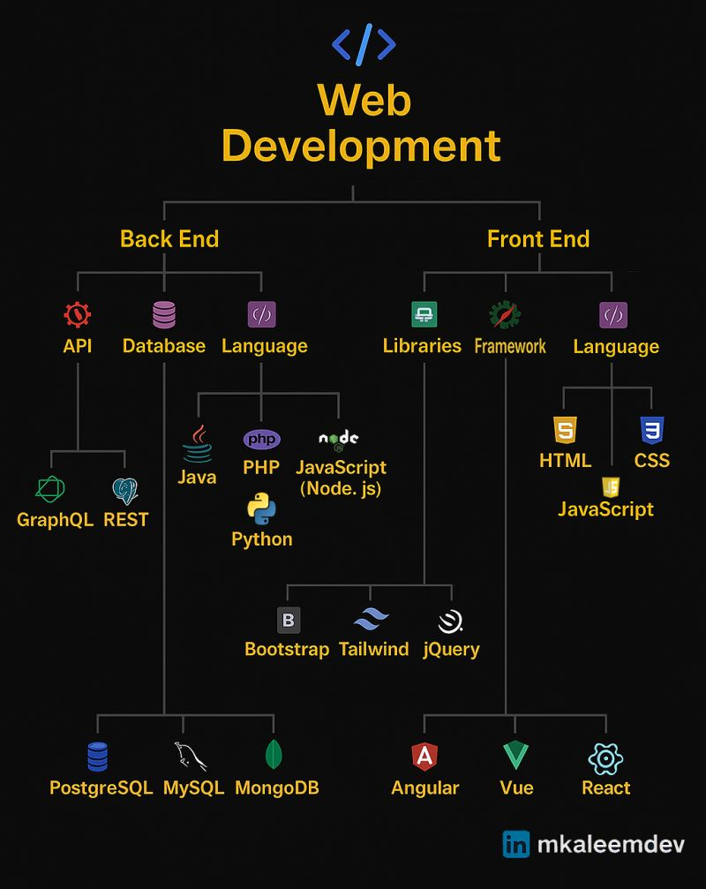

React & Next.js

Веб хөгжүүлэлтийн том зураглал
Next.js-ийн API route нь энийг хэсэгчлэн орлодог
Front End Framework-үүд
Дэлхийд Angular, Vue, React гэсэн гурван том framework байдаг. Бид React-ийг сонгосон — хамгийн их ашиглагддаг, ажлын байр хамгийн их. ирээдүйд Next.js-тэй хослуулан full-stack түвшинд ажиллах боломжийг танд олгоно.
Бидний сурах замнал
HTML/CSS/JS-ийг та нар мэднэ. Одоо React сурж, дараа нь Next.js дээр шилжинэ.
React гэж юу вэ?
React бол Facebook/Meta-аас 2013 онд гаргасан JavaScript library бөгөөд вэбийн UI (хэрэглэгчийн интерфэйс) хийхэд зориулагдсан. Өнөөдөр дэлхийн хамгийн их ашиглагддаг frontend хэрэгсэл.
Хэн ашигладаг
Instagram, TikTok,
Airbnb, Netflix
Юу хийдэг
UI component
хийдэг library
Суурь
JavaScript мэдвэл
сурч болно
Энгийнээр:
HTML/CSS/JS-ээр хуудас хийж болно — гэхдээ том, олон хуудастай, интерактив апп хийхэд маш хэцүү болдог. React тэр хэцүүг шийддэг.
Яагаад React хэрэгтэй вэ?
Жирийн JavaScript-ийн асуудлыг харцгаая. Дараах лайк товч-ийг хийнэ гэж бодъё:
Асуудал: data өөрчлөгдөх бүрт DOM-ийг гараар шинэчлэх хэрэгтэй. Код их болох тусам алдаа гарах магадлал нэмэгдэнэ.
Шийдэл: setCount дуудахад React автоматаар UI-г шинэчилнэ. DOM гараар шинэчлэх шаардлагагүй.
JSX — HTML + JavaScript хамт
React JSX хэл ашигладаг — JavaScript функц дотор HTML бичих боломж. Эхэндээ харахад хачирхалтай боловч маш хялбар.
Жирийн JavaScript + HTML
React JSX — хамт бичнэ
JSX-ийн дүрэм:
class → className болно
{} хаалтанд орно
Component — дахин ашиглагдах блок
React-д бүх зүйл component. Component бол JSX буцаадаг JavaScript функц. Нэг удаа бичиж, хаана ч хэдэн ч удаа ашиглана.
Component бичих аргууд — rfc, rfce, rafce
Нэг component-ийг бичих 3 өөр арга байдаг. Бүгд ижил үр дүн өгдөг — зөвхөн бичих хэлбэр нь өөр.
rfc
Уламжлалт арга. function гэдэг үгийг харахад шууд "энэ component" гэдэг нь ойлгомжтой.
rafce
Орчин үеийн бичлэг. JavaScript-д const-оор функц тодорхойлж болдог — () => бол "arrow function" гэдэг хэлбэр.
rfce
Next.js-д хамгийн их ашиглагддаг. export default-ийг функцийн өмнө нь шууд бичнэ — дор нь тусад нь бичих шаардлагагүй.
VS Code товчлол — ES7+ React Snippets extension
| Товчлол | Бүтэн нэр | Ялгаа |
|---|---|---|
rfc |
React Functional Component | function хэлбэр, export доор нь |
rfce |
React Functional Component Export | export default function шууд |
rafc |
React Arrow Function Component | const = () => хэлбэр, export доор нь |
rafce |
React Arrow Function Component Export | const = () => + export default |
export default vs export — ялгаа нь юу вэ?
export default ашиглана (нэг файл = нэг component). Helper функцүүдэд export ашиглана.
State — өөрчлөгддөг data
State бол component дотор хадгалагддаг, өөрчлөгдөх боломжтой data. State өөрчлөгдөхөд React тухайн component-г автоматаар дахин харуулна.
useState(0)
Эхний утгыг тохируулна
count
Одоогийн утгыг уншина
setCount(шинэ)
Утгыг өөрчилж, UI шинэчилнэ
React дангаараа хийж чадахгүй зүйлс
React зөвхөн UI хийдэг library. Том вэбсайт хийхэд дараах зүйлс дутагдана:
Routing байхгүй
/about, /contact гэх мэт хуудас хийхдээ тусдаа package суулгаж, гараар тохируулах хэрэгтэй
SEO муу
React хуудас хэрэглэгчийн browser дотор харуулдаг тул Google хайлтад муу гардаг
Сервер тал байхгүй
Database-тэй холбогдох, нэвтрэлт хийх зэрэгт тусдаа backend сервер хэрэгтэй
Яг үүнд Next.js хэрэгтэй болдог
Next.js = React + Routing + SEO + Server + Deployment — бүгдийг нэг дор
Next.js гэж юу вэ?
Next.js бол вэбсайт хийхэд хэрэгтэй бүх зүйлийг бэлэн өгдөг framework. Хуудас хооронд шилжих (routing), серверт өгөгдөл уншуулах, SEO — бүгдийг дангаараа шийддэг.
Энгийнээр хэлбэл:
React = машины хөдөлгүүр — UI хийдэг, харин routing, SEO байхгүй
Next.js = бүтэн машин — хөдөлгүүр + жолооны хүрд + GPS + суудал, бүгд дотор
Юунд хэрэглэгддэг вэ?
Ашиглагчид: TikTok, Twitch, Nike, GitHub, Hulu болон олон мянган компани.
React ба Next.js — ялгаа нь юу вэ?
| Чадвар | React дангаараа | Next.js |
|---|---|---|
| Routing | Гараар тохируулах | Автомат ✓ |
| SEO | Муу (хайлтад гардаггүй) | Маш сайн ✓ |
| Серверт харуулах | Байхгүй | Бэлэн байгаа ✓ |
| API route | Тусдаа сервер хэрэгтэй | Дотор нь байгаа ✓ |
| Deploy хийх | Гараар тохируулах | Vercel дээр 1 товшилтоор ✓ |
Routing — файл нь хуудас болдог
Next.js-д router тохируулах шаардлагагүй. Файл үүсгэхэд л хуудас автоматаар үүсдэг.
Файлын бүтэц
Үүсэх URL хаяг
Жишээ нь:
app/about/page.tsx файл үүсгэхэд yoursite.com/about хаяг автоматаар ажилладаг. Router бичих шаардлагагүй.
Код жишээ
1. Энгийн хуудас үүсгэх
app/about/page.tsx → yoursite.com/about
2. Өгөгдөл авах — React vs Next.js
React дангаараа
Next.js серверт
3. API route — backend код Next.js дотор
app/api/route.ts → yoursite.com/api
Суулгах & Төсөл хийх →
Component, Layout, алхам алхмаар суулгаж Header + Footer + олон хуудастай сайт хийх